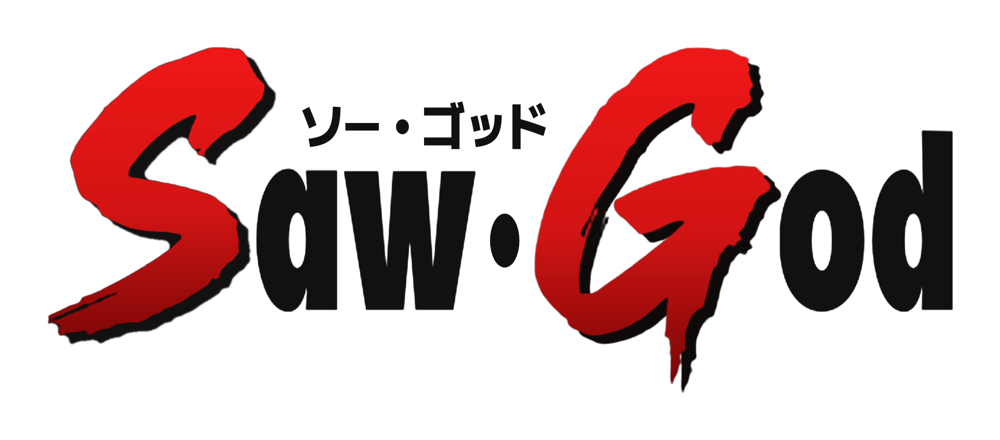
Download SawGod 1.1.0
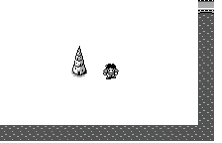
New enhanced graphics
Switch between Game Boy, WonderSwan Color, and Enhanced graphics modes at any time.
Game Boy and WonderSwan Color modes use the exact original artwork, while Enhanced mode adds an angled Mode 7 world map, depth of field, point lighting, and bloom for an HD-2D-style presentation.
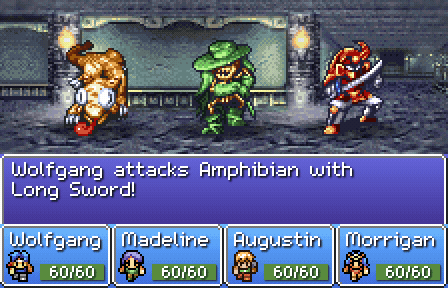
Switch between Game Boy, WonderSwan Color, and Enhanced graphics modes even during battles!
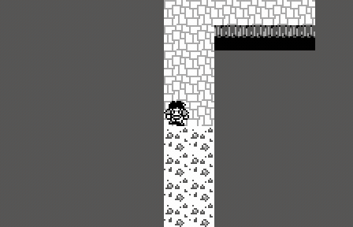
In Enhanced graphics mode, the camera can zoom out to show more of the towns and dungeons.
Point lighting and depth of field
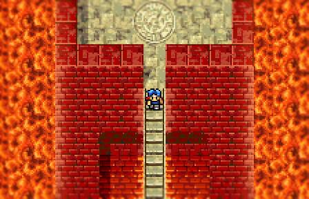
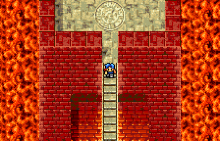
Mode 7 world maps
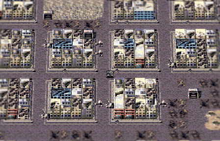
Riding through the post-apocalyptic ruins.
New enhanced soundtrack
New, human-arranged versions of the classic Nobuo Uematsu soundtrack. Game Boy and WonderSwan Color audio are also available. Music switches seamlessly between all 3 modes in real-time.
Listen to the Enhanced soundtrack on YouTubeNew redesigned UI
Menus have been completely redesigned for longer names and item descriptions. Drag the dividers to compare the original WonderSwan Color layout with the redesigned Enhanced interface.
Inventory
Items and Key Items have been moved to separate tabs. Items and weapons now show their power and what stat they scale with.
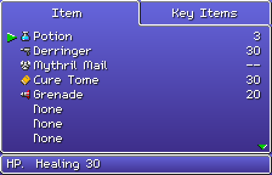
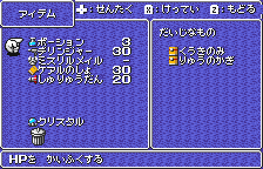
Armory stock
See more of the shopkeeper's stock at once.
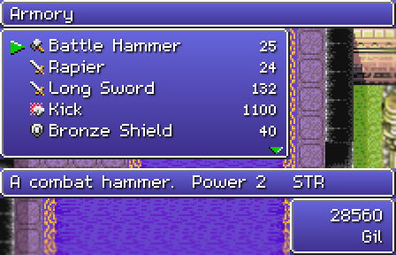
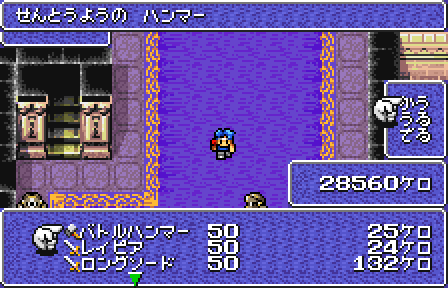
Equipment
See a party member’s gear and stats.
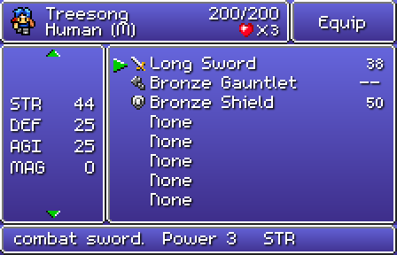
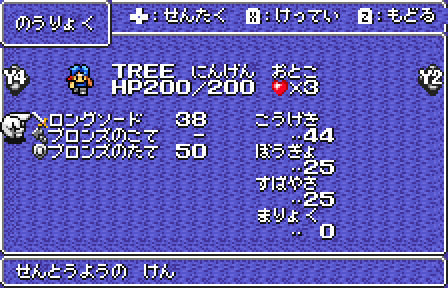
Skills and abilities
See a member’s stats, skills, and passive abilities.
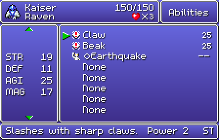
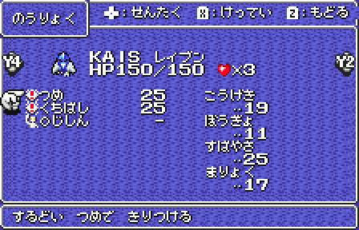
Battle
Party members and enemies alike have floating HP bars. Spells have been updated with lighting effects.
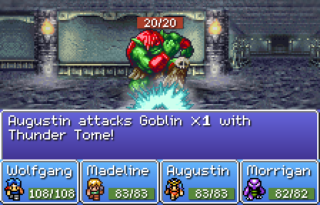
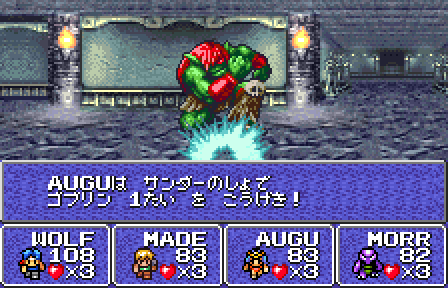
Meat preview
See what monster you'll become and how it will affect your stats before eating the meat.
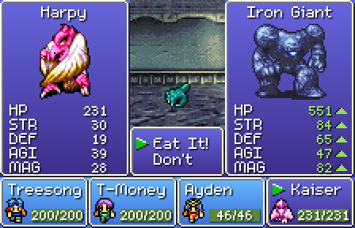
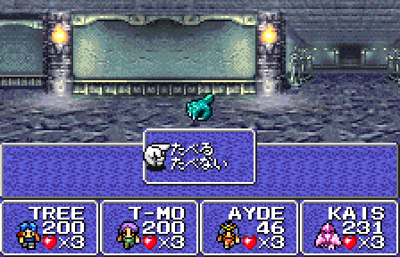
New English translation
The entire game has been given a new, human-localized English translation, designed for the new UI.
The original Japanese text is also available.
Drag the sliders to compare English and Japanese in the inventory and battle screenshots.
Inventory
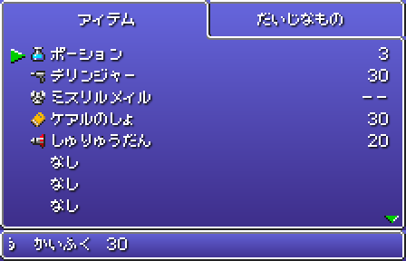
Battle
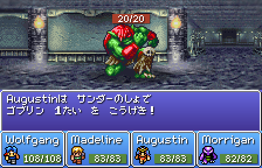
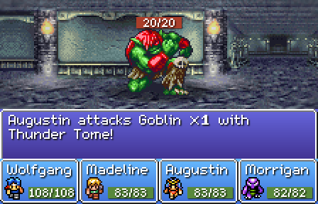
Boosts and Cheats
Adjust the game’s presentation and controls, or use optional boosts and cheats.

Download
SawGod is free. You need your own Japanese WonderSwan Color ROM of 魔界塔士 Sa・Ga (Makai Toushi Sa-Ga (Japan).wsc); no game data is included. On first run, choose your ROM, and SawGod sets up everything else.
Windows 64-bit
Download for WindowsUnzip the whole folder and open sawgod.exe. If Windows warns about an unrecognized app, choose More info, then Run anyway.
macOS Apple Silicon, macOS 11 or later
Download for macOSUnzip and drag SawGod.app to Applications. The first time, right-click it and choose Open; on newer macOS, use System Settings › Privacy & Security › Open Anyway.
Linux x86_64, glibc 2.39 or later
Download for LinuxExtract it to a folder you can write to and run ./sawgod.
Android Android 8.0 or later, gamepad required
Download for AndroidOpen the APK on your device and allow installing from that source. Connect a gamepad: there are no touch controls yet.
Each download includes a README with controls, where your saves live, and how to keep them when you update.
About the project
SawGod is a full rebuild of a static recomp of 魔界塔士 Sa・Ga / Final Fantasy Legend. SaGa is one of my favorite games of all time, one I consider foundational to understanding JRPGs, and one that is depressingly underappreciated in the West. My goal has been to give a small bit of shine to this 37-year-old RPG and hopefully introduce some new players to this classic game.
AI Disclosure
SawGod was made with Claude. I consider this project “AI-assisted,” not “vibe-coded.”
SawGod is built on top of a complete static recomp of the 2002 WonderSwan Color version, partially decompiled for readability. It is not an emulation wrapper. Once the recomp was complete, quality-of-life features were added, as well as the Game Boy and Enhanced modes as presentation layers. To support Enhanced mode, the code was modified and labeled to be more easily moddable and understandable, with support for replacing graphics, game data, and text as standard, externalized resource files.
The new English translation and Enhanced music arrangements were 100% made by a human (me). Game Boy and WonderSwan Color graphics are 100% original. Enhanced mode was designed with a "light touch" to reflect the original creators' intent as much as possible. The biggest non-reversible change I made was the new UI framework and layout, used by all graphics modes, and necessary to support the new English translation.
For more about the architecture and modding, see How it works and Modding.